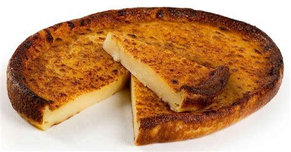
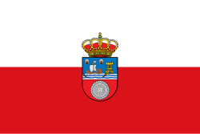

Cantabria
Overview
Cantabria is in the north of Spain, along the Bay of Biscay. It is known for its lush nature, mountains, and beaches. The region has a rich history and important archaeological sites, such as the Altamira Caves.
Quick Facts
- Capital: Santander
- Regional Language: Spanish
- Population: ~580,000
- Famous for: Nature, beaches, and prehistoric caves
- Fun Fact: The Altamira Caves feature paintings over 14,000 years old.
Popular Dishes
Sobaos Pasiegos
Quesada Pasiega

Cocido Montañés

Santoña Anchovies

Famous Places
Altamira Caves

La Magdalena Palace

Cabárceno Nature Park

Santander

Langre Beach

Best Time to Visit
The best time to visit Cantabria is in spring and summer, when the weather is warmer and more pleasant for enjoying the nature and beaches.
Regional Symbols
- Flag: 
- Coat of Arms:
.svg.png)